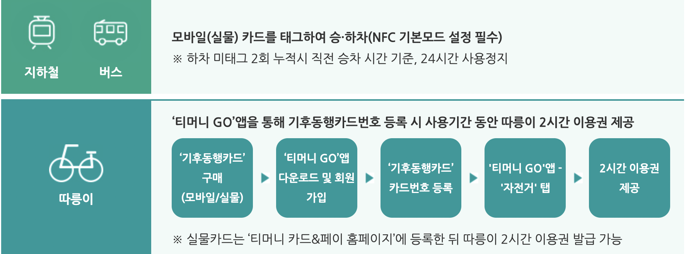

서울 지하철 이용방법
지하철노선도
일회용 교통카드 사용법
1회용 교통카드는 수도권 도시철도를 1회만 이용할 수 있는 교통카드로서 역사에 설치되어 있는 「1회용 발매·교통카드 충전기」에서 이용운임과 보증금(500원)을 투입하여 발급받고 이용 후 보증금은「보증금 환급기」에서 돌려받을 수 있습니다. 보증금 500원은 카드가 분실·훼손되지 않을 경우 언제든지 돌려받을 수 있으니 반드시 돌려받으세요. 보증금은 1회용 교통카드 사용 후 「보증금 환급기」에서 돌려받을 수 있습니다.
1회용 교통카드는 수도권 도시철도에서만 사용이 가능합니다. 1회용 교통카드는 재사용되므로 훼손하시면 안 됩니다. 본인 부주의로 1회용 교통카드가 분실 · 훼손된 경우 보증금을 돌려받을 수 없습니다. 목적지를 잘 못 선택하여 하차할 수 없는 경우에는 「교통카드 정산·충전기」또는 역직원에게 문의하세요. 교통카드 단말기에 접촉 시 오류(Error)표시가 나거나 반응이 없는 경우 역직원에게 문의하세요. 무임승차 대상자분들은 발매 시 신분증 확인을 통해 우대용을 발급받을 수 있으며, 단, 발급 받은 당일 발급받은 역에서만 승차가 가능합니다.

기후동행카드란?
